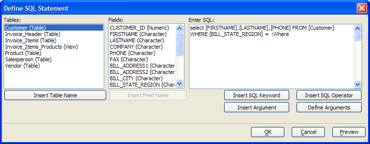

Define SQL Statement Dialog
The ADO Import Genie uses the Define SQL Statement dialog to create SQL SELECT statements.
Enter a SELECT statement in the Enter SQL window.
To insert a table name or field name, position the cursor in the expression, select the item from its list and click the Insert Table Name or Insert Field Name button.
To insert a SQL keyword or SQL operator, position the cursor in the expression, click Insert SQL Keyword or Insert SQL Operator, select the item from its list, and click OK to continue.
An argument is used to obtain a runtime value either from a variable or from the operator. Optionally, click Define Arguments to display the Define/Edit Arguments dialog.
Optionally, after you have defined one or arguments, click Insert Argument.
Optionally, if you have defined a user prompt for your argument, click Preview to see the user prompt.
Click OK to continue.

 Note : The Define
SQL Statement dialog does not insure that your SQL expression is
correct.
Note : The Define
SQL Statement dialog does not insure that your SQL expression is
correct.
See Also